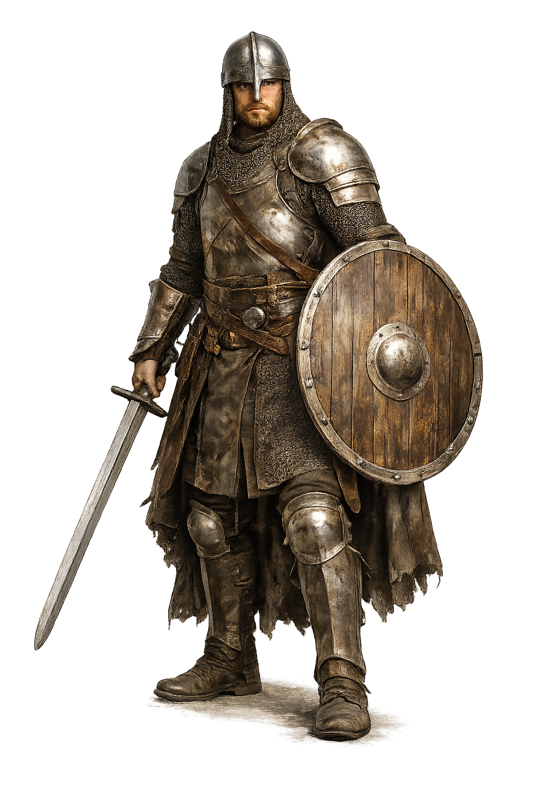
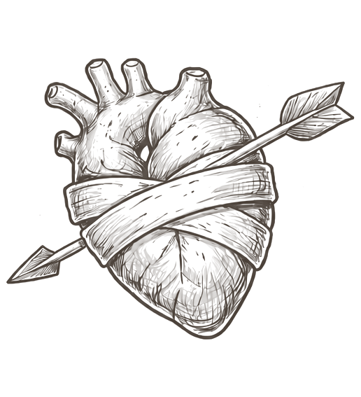
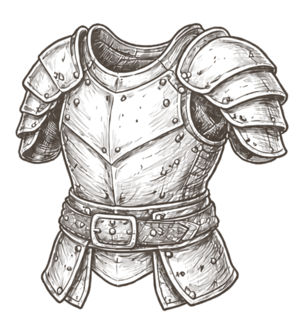
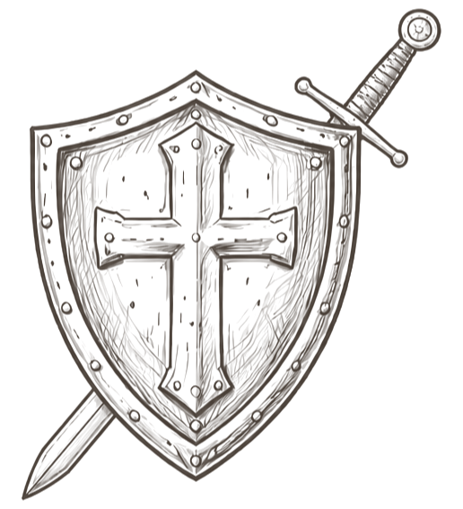
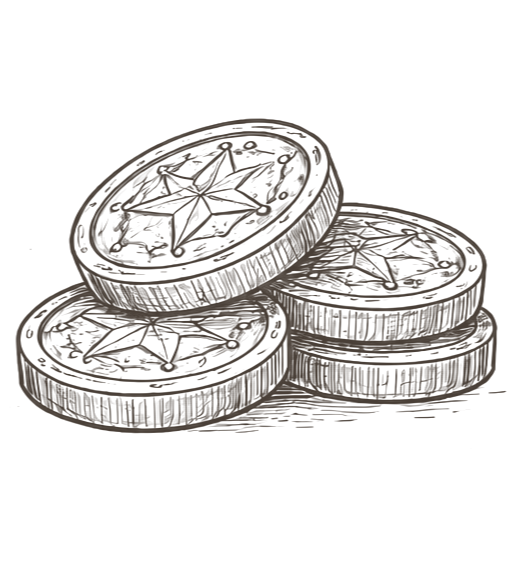

De standvastige voorhoede
Krijger
Meester van wapen en harnas. De krijger houdt de linie, beschermt het gezelschap en blijft staan wanneer anderen moeten wijken.
Taaiheid

5
Harnas

Alle harnassen
Uitrusting

Alle wapens + schild
Goud

125"Achter mij. Ik vang de eerste slag op."